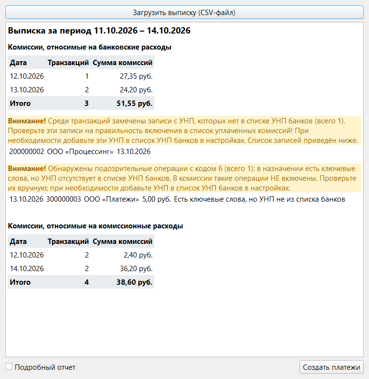
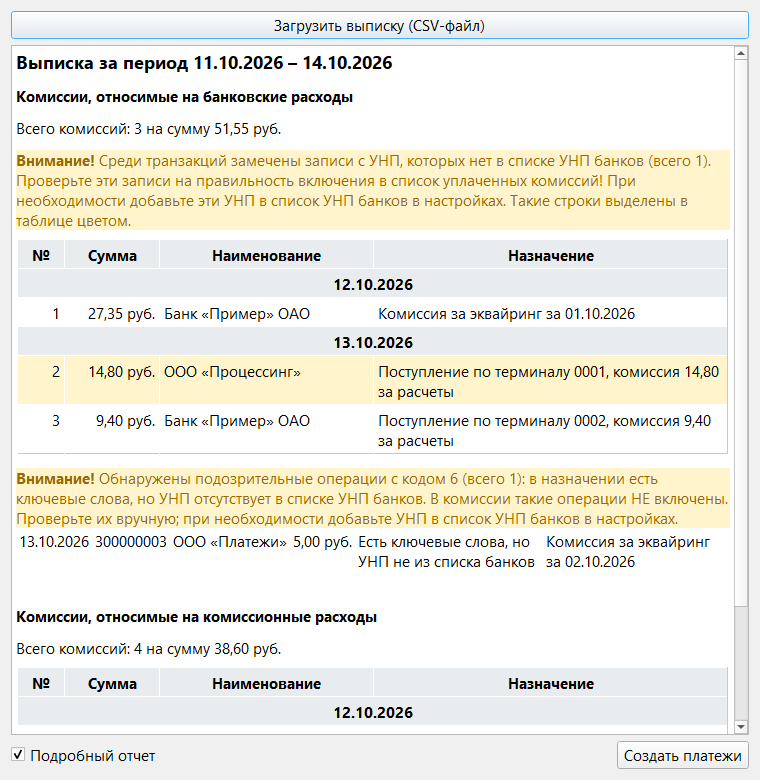

Раздел 10. Учет комиссий банка |
Банк списывает комиссии мелкими суммами по нескольку раз в день и не выставляет по ним отдельных счетов. Окно «Учет комиссий» находит комиссии в выписке, суммирует их по дням и создаёт по каждому дню оплаченный платеж. Без этого комиссии остаются в сверке (раздел 9) в списке «Только в выписке».
Как открыть |
Что настроить заранее |
«Настройки» → «Парсер выписки», группа «Парсер комиссий». Строки периода и операций и столбцы общие со сверкой (раздел 9).
| Поле | Что вводить |
|---|---|
| Номер строки с указанием периода | Строка файла, где написано «С … ПО …». Нумерация с 1, как в Excel |
| Номер строки с первой операцией | Операции читаются до первой пустой строки |
| Столбцы (дата, код, УНП, название, сумма, назначение, получатель) | Номера столбцов файла с 0, через запятую: семь цифр, по одной на каждый. Сумма — столбец дебета. Столбец «название» программа не использует, но указать его нужно |
| УНП банков | Девятизначные УНП через запятую |
| Дополнительные паттерны | Слова из назначения платежа, по которым узнаётся комиссия, через запятую; регистр не важен. Нужны только для комиссий, которые банк удерживает из поступлений (см. ниже) |
| Ответственный за комиссии | Подставляется в создаваемые платежи |
Какие операции считаются комиссиями |
Программа читает только строки с кодом операции 2 и 6. Остальные пропускаются.
| Группа в отчёте | Какая операция | Откуда берётся сумма |
|---|---|---|
| Комиссии, относимые на банковские расходы | Код 6: банк удержал комиссию из поступления. В назначении есть слово «комиссия» (строчными буквами) и сразу за ним сумма: «…, комиссия 14,80 за расчеты» | Из текста назначения |
| Комиссии, относимые на банковские расходы | Код 6: УНП есть в списке УНП банков и в назначении есть один из дополнительных паттернов | Из дебета |
| Комиссии, относимые на комиссионные расходы | Код 2: УНП есть в списке УНП банков | Из дебета |
Операцию с кодом 6, в назначении которой есть паттерн, но УНП не из списка банков, программа считает подозрительной и в комиссии не включает.
|
⚠️ Внимание. «Исключающие паттерны для выписки» (группа «Парсер модуля сверки») действуют только в сверке. В учёте комиссий строки с такими паттернами не пропускаются, поэтому суммы могут разойтись (см. «Что может пойти не так»). |
Отчёт |

Рис. 30. Окно «Учет комиссий». Предупреждения выделены жёлтым.
«Подробный отчет» вместо дневных итогов показывает каждую комиссию отдельно: сумму, наименование (получатель в выписке) и назначение платежа.

Рис. 31. Подробный отчёт. Строка с УНП не из списка банков выделена цветом.
Предупреждения:
Создание платежей |
Программа создаёт по одному платежу на каждый день и каждую группу и сразу вносит оплату на всю сумму с датой операций (остаток нулевой).
| Поле платежа | Значение |
|---|---|
| Получатель | «Банки» |
| Наименование | «[A] Комиссия банка, удержанная из поступлений» (банковские расходы) или «[A] Комиссионное вознаграждение банку» (комиссионные расходы) |
| Категория | «Банковские расходы» или «Комиссионные расходы» |
| Сумма | Итог комиссий за день |
| Срок оплаты | Дата операций |
| Дата возникновения | Дата операций |
| Вид платежа | «по факту» |
| НДС | 0 |
| Основание | «Выписка от ДД.ММ.ГГГГ» |
| Ответственный | Из настройки «Ответственный за комиссии» |
| Заметки | «Всего комиссий: N (в том числе на суммы: …)» |
Перед созданием программа проверяет:
|
⚠️ Внимание. Не меняйте начало наименования «[A]» у созданных платежей: по нему программа узнаёт, что комиссии за этот день уже внесены. Загружайте выписки за непересекающиеся периоды. |
Платежи создаются по очереди: при ошибке уже созданные остаются, поэтому перед повторным запуском проверьте таблицу платежей, иначе появятся дубли. Отменить создание нельзя: лишние платежи удаляются в главном окне (раздел 3).
Что может пойти не так |
| Что вы видите | Что случилось | Что делать |
|---|---|---|
| «Не удалось прочитать CSV-файл: Не удалось найти строку с периодом выписки (ROW_PERIOD)», «…В строке периода выписки не найдены даты» или «…В файле не найдена строка с периодом выписки» | В указанной строке нет периода «С … ПО …» | Проверьте номер строки с периодом в настройках и что выбран файл выписки |
| «Не удалось прочитать CSV-файл: Не удалось преобразовать в число значение Дебета: …» | В строке с комиссией сумма не читается | Проверьте номер столбца суммы в настройках |
| «Не удалось прочитать CSV-файл: Не удалось получить дату из строки N: …» | В столбце даты стоит не ДД.ММ.ГГГГ | Проверьте номер столбца даты. Номер N в сообщении на единицу меньше номера строки в Excel |
| «Не удалось прочитать CSV-файл: Строка N: найдено более одного совпадения суммы комиссии: …» | В назначении одной строки больше одного слова «комиссия» с суммой | Оставьте в назначении этой строки в копии файла одну комиссию и загрузите файл заново |
| «Не удалось прочитать CSV-файл: …» с системным текстом | Файл не в кодировке Windows-1251, занят другой программой или недоступен | Скачайте выписку заново, закройте файл в других программах |
| «Транзакций с комиссиями не обнаружено», хотя комиссии в выписке есть | Неверны номер строки с первой операцией или номера столбцов, пуст список УНП банков, не заданы дополнительные паттерны | Сверьте настройки с файлом выписки. Если номера столбцов выходят за границы строки файла, программа молча прекращает чтение |
| «Вычисленная сумма комиссий не совпадает с суммой в сверке выписки: …» | Комиссии за день в сверке и в учёте разные. Обычно причина — исключающие паттерны, которые учтены в сверке, но не в учёте. Категории названы по-английски: BANKING — банковские расходы, COMMISSION — комиссионные | Если разница ожидаема, подтвердите создание. Иначе проверьте исключающие паттерны и подозрительные операции в отчёте |
| «В базе данных обнаружены уже имеющиеся записи об оплаченных комиссиях за следующие даты: …» | Комиссии за эти дни уже внесены | Откажитесь и проверьте таблицу платежей. Подтверждайте, только если платежи нужны дополнительно |
| «До момента ошибки было успешно создано N записей о комиссиях…» | Создание прервалось | Проверьте таблицу платежей и создайте недостающее вручную |
| «При создании записи об уплаченной комиссии произошла ошибка (подробнее см. лог)» или «Не удалось выполнить запрос к базе данных (см. подробности в логе)» | Платеж не удалось записать или проверить на дубли | Повторите; если повторяется, обратитесь к ответственному за программу |
| «Укажите номера всех семи столбцов выписки (цифры через запятую)» или «Поле с перечнем УНП банков заполнено неверно (разрешены только девятизначные УНП через запятую)» | Настройки не сохранены | Исправьте поле с красной рамкой |